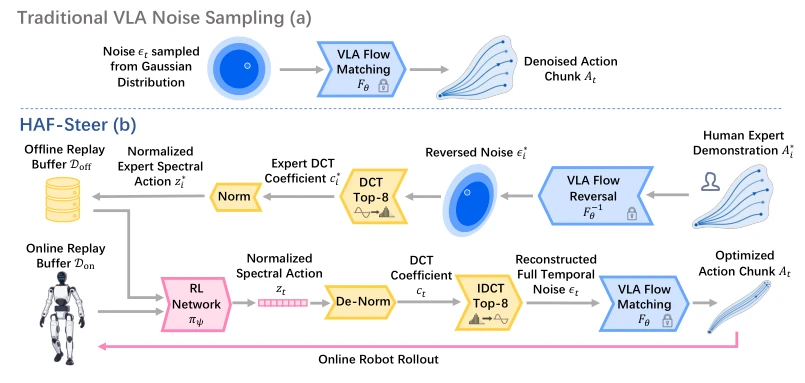
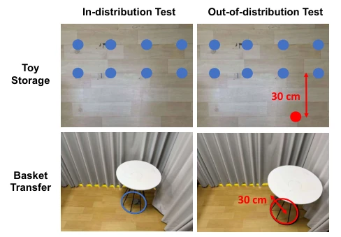
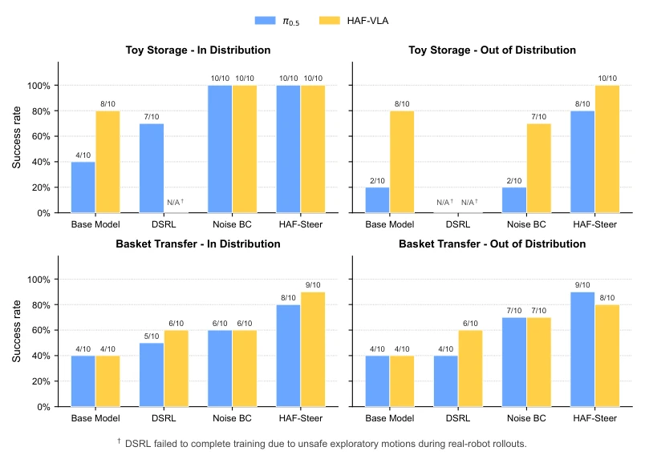
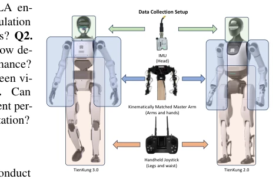

Figure 1: Overview of HAF. We demonstrate seven humanoid loco-manipulation tasks in real-world settings. HAF consists of two complementary components: HAF-VLA is a hierarchical action-flow vision-language-action model that generates whole-body motions stage by stage according to the kinematic dependencies among locomotion, torso adjustment, and dual-arm manipulation; HAF-Steer performs latent-space reinforcement learning on discrete cosine transform compressed temporal noise from frozen flow-based VLA policies. Together, they improve task performance in real-world settings.
Figure 2: Overview of HAF-VLA. A shared action expert progressively expands the active action space from locomotion and head control to waist posture and bimanual manipulation. Clean action caches from earlier stages condition subsequent generation, and only the final full-body action chunk is executed.

Figure 3: Overview of HAF-Steer. (a) A conventional flow-matching VLA samples full-dimensional Gaussian noise and decodes it into an action trajectory through a frozen flow generator. (b) HAF-Steer instead constructs a low-dimensional spectral action space from expert demonstrations: demonstrated trajectories are mapped back to their initial flow noise through numerical reverse integration, com- pressed by retaining the first 8 temporal DCT coefficients, and normalized to form expert spectral actions in the offline replay buffer. An RL policy is trained with mixed offline and online experience to predict spectral actions, which are de-normalized, reconstructed into full temporal noise by inverse DCT, and decoded by the frozen VLA to produce executable robot trajectories.
Figure 5: Seven real-world humanoid loco-manipulation tasks. Each row depicts a representative execution sequence requiring navigation, whole-body posture adjustment, and physical object interac- tion.

Figure 7: In-distribution and out-of-distribution eval- uation setups for HAF-Steer. Blue markers indicate destination-table locations covered during demonstration col- lection, while red markers indicate the OOD evaluation loca- tions. For Toy Storage, the destination table is placed 30 cm beyond the demonstrated spatial range. For Basket Transfer, the destination table is shifted by 30 cm from its demon- strated position.

Figure 8: HAF-Steer performance under in-distribution and out-of-distribution settings. We report successful trials out of 10 rollouts on Toy Storage and Basket Transfer using both π0.5 and HAF-VLA backbones. Noise BC denotes the spectral actor after behavior-cloning initialization without SAC post-training. † DSRL failed to complete training because unsafe exploratory motions triggered early termination during real-robot rollouts.
其他图片Other Figures

Figure 4: Robot teleoperation data collection setup. The teleoperation pipeline uses an IMU for head control, kinematically matched master arms for dual-arm manipulation, and a joystick to command leg locomotion and waist posture.